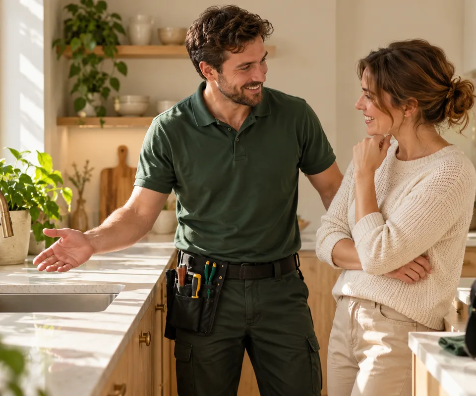

Расскажите о задаче
Выберите услугу, укажите адрес и удобное время. Заявка сохранится в кабинете.
Домашний помощник
Платформа для бытовых задач: от уборки до небольшого ремонта. Найдите мастера, оставьте заявку и следите за работой в личном кабинете.

Просто и по делу
Заказчику нужен понятный результат, а мастеру — удобный способ организовать работу. Мы собрали обе стороны в одном месте.
Посмотреть мастеровВыберите услугу, укажите адрес и удобное время. Заявка сохранится в кабинете.
После назначения мастера обсудите объём, стоимость и время в чате заявки.
Подтвердите выполненную работу и оставьте отзыв о своём опыте.
Каталог мастеров, избранное, статусы заявок и переписка. История остаётся в вашем аккаунте.
Оставить заявку →Профиль с услугами и портфолио, рабочее расписание и заявки. Перед публикацией анкета проходит модерацию.
Создать аккаунт мастера →Телефон, мессенджеры и режим работы — в разделе «Контакты».